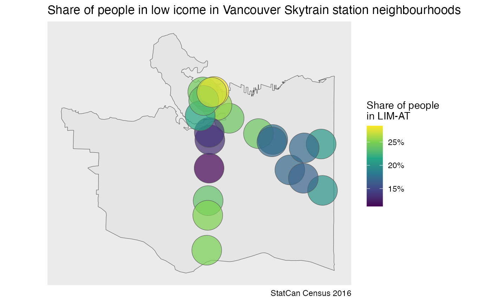

Estimating Canadian data on custom geographies
Source:vignettes/tongfen-ca-estimate.Rmd
tongfen-ca-estimate.RmdThe tongfen_estimate_ca_census function implements the
full pipeline to estimate census data on custom geographies.
As an example, we estimate the share of people in low income in
Vancouver’s skytrain station neighbourhoods. The station neighbourhoods
are available as part of the cancenus package.
station_buffers <- cancensus::COV_SKYTRAIN_STATIONSNext we assemble the required metadata for the share of people in LIM-AT and estimate the share on our custom geography using DA level census data. Here we pull the census data based on CT level intersections to preserve API points.
meta <- meta_for_ca_census_vectors(c(limat = "v_CA16_2540"))
station_data <- tongfen_estimate_ca_census(station_buffers,meta,level = "DA",intersection_level = "CT",
quiet=TRUE, na.rm = TRUE)The result is a dataframe with estimates of the share of the population in LIM-AT for each buffered station, which we can plot or use otherwise for further analysis.
cov_background <- cancensus::get_census("CA16",regions=list(CSD="5915022"),geo_format = "sf", quiet=TRUE)
ggplot(station_data) +
geom_sf(data=cov_background) +
geom_sf(aes(fill=limat/100),alpha=0.7) +
scale_fill_viridis_c(labels=scales::percent) +
coord_sf(datum=NA) +
labs(title="Share of people in low icome in Vancouver Skytrain station neighbourhoods",
fill="Share of people\nin LIM-AT",
caption="StatCan Census 2016")